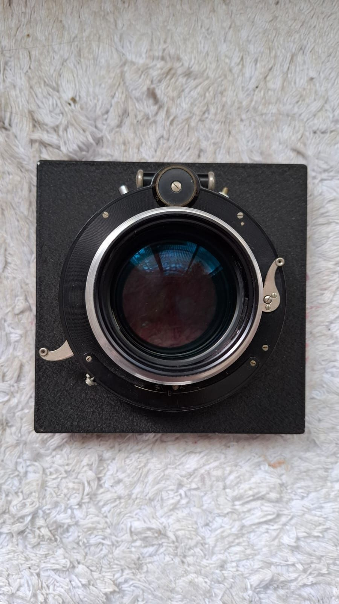
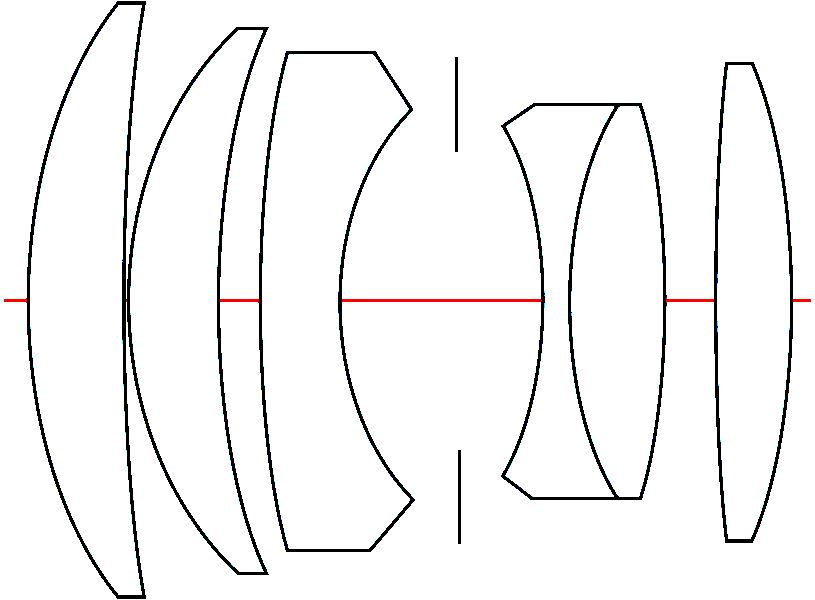
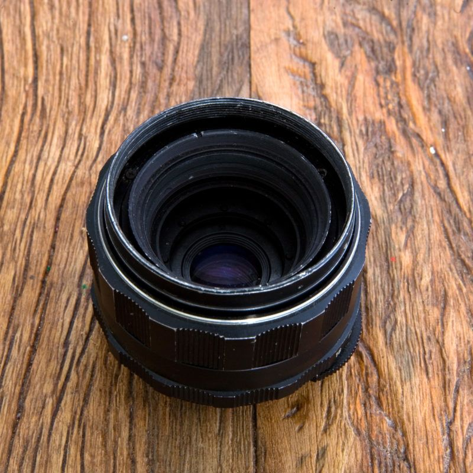
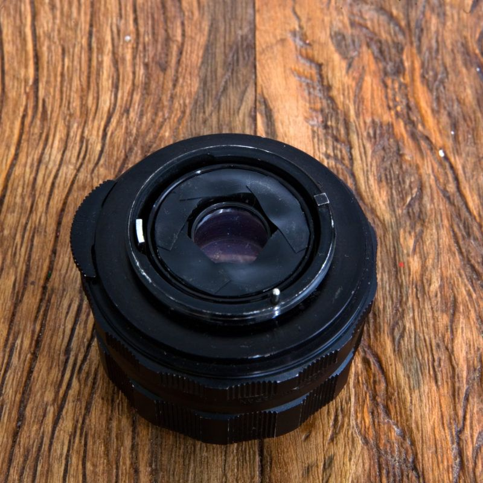

Daniel Malva
Lentes
Instrumentos construídos
162 mm 2.2
Lente construída com elementos óticos brutos, com inspiração nas Aero Ektar usadas em aviões da Segunda Guerra Mundial.


Lente com tampa de xampu
Lente com elemento ótico feito com uma tampa de xampu.

